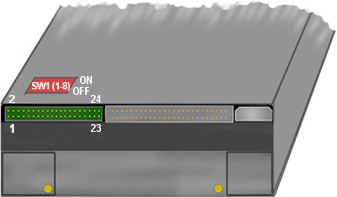

Operating Documentation
Direction 5114045-800, Rev# 10
LightSpeed 4.X Service Information (Advanced)
Operating Documentation |
The location of the jumpers on T5-2600 is shown here. There is a single 40-pin Berg connector on the T5 Model, and a 24 pin Berg connector and a mini-dip switch pack on the T5 Star Model.
| NOTE: | 'ON' refers to the on position as indicated on the dip-switch bank. 'ON' is equivalent to being closed or having a jumper installed. |
The Drive is configured with a SCSI ID of 3. Refer to Illustration 1 to help identify the pin numbers. Jumpers should be as follows:
1 - 2 ON
3 - 4 ON The first three jumper settings make a SCSI ID of 3.
5 - 6 OFF
7 - 8 ON This Enables Write Verify
All Other Pins - OFF - No jumpers
SW1 DIP Switch Settings - All 1 - 8 positions should be OFF
Illustration 1: MOD Drive (Maxoptix T5-2600 Star)

Table 1: Functional Switch Connector Pin Assignments
| Pin Number | Description | Default | Function |
|---|---|---|---|
| 1 & 2 | SCSI ID bit zero | installed | enable |
| 3 & 4 | SCSI ID bit one | installed | enable |
| 5 & 6 | SCSI ID bit two | removed | disable |
| 7 & 8 | Write with verify | installed | enable |
| 9 & 10 | Active termination | removed | disable |
| 11 & 12 | Drive supplied term power | removed | disable |
| 13 & 14 | SCSI bus supplied term power | removed | disable |
| 15 | AC eject | Jukebox operation | Reserved |
| 16 | LED pipe | Jukebox operation | Reserved |
| 17 | PwrDnReq | Jukebox operation | Reserved |
| 18 | PwrDnAck | Jukebox operation | Reserved |
| 19 | AC error | Jukebox operation | Reserved |
| 20 | Cart in drive | Jukebox operation | Reserved |
| 21 | AC reset | Jukebox operation | Reserved |
| 22 | Cart loaded | Jukebox operation | Reserved |
| 23 | GND | Jukebox operation | Reserved |
| 24 | Stand alone/AC | Jukebox operation | Reserved |
Table 2: Configuration Switch Settings (SW1)
| Switch Number | Description | Default |
|---|---|---|
| SW1-1 | DEC MVAX Mode | Off |
| SW1-2 | Disable Auto Spin Up | Off |
| SW1-3 | Disable SCSI Bus Parity | Off |
| SW1-4 | Enable Apple Mode | Off |
| SW1-5 | Disable Removable Media | Off |
| SW1-6 | Disable Optical Device | Off |
| SW1-7 | Disable Write Cache | Off |
| SW1-8 | Disable Read Cache | Off |